bSSFP echoes
This page illustrates balanced steady-state free precession (bSSFP) "echoes" using the Julia package BlochSim
Reference
This page comes from a single Julia file: bssfp-echo.jl.
You can access the source code for such Julia documentation using the 'Edit on GitHub' link in the top right. You can view the corresponding notebook in nbviewer here: bssfp-echo.ipynb, or open it in binder here: bssfp-echo.ipynb.
Setup
First we add the Julia packages that are need for this demo. Change false to true in the following code block if you are using any of the following packages for the first time.
if false
import Pkg
Pkg.add([
"BlochSim"
"InteractiveUtils"
"LaTeXStrings"
"LinearAlgebra"
"MIRTjim"
"Plots"
"Random"
])
endTell this Julia session to use the following packages for this example. Run Pkg.add() in the preceding code block first, if needed.
using BlochSim: InstantaneousRF, RectRF
using BlochSim: bssfp
using MIRTjim: prompt
using Plots: color, default, gui, plot, plot!, scatter!, scatter3d!
using Plots: annotate!, text
using Random: seed!
default(titlefontsize = 13, plot_titlefontsize = 13,
markerstrokecolor = :auto, label="", width = 1.5, linewidth = 2)
seed!(0);The following line is helpful when running this file as a script; this way it will prompt user to hit a key after each figure is displayed.
isinteractive() || prompt(:draw);bSSFP quasi spin-echo
We first reproduce Fig. 1 of Ref. 1 that shows a spin-echo like behavior at TE ≈ TR/2 when T1 and T2 are relatively long, i.e., T1, T2 ≫ TR.
The 'blue' plots use the "standard" 180° RF phase cycling factor that moves the passband to 0Hz, whereas the 'red' plots use a 60° increment and the 'black' plots use no phase cycling.
Our "blue" result matches Fig. 1 of Ref. 1 except for a conjugate (-phase).
The nonzero phase in passband of the red plot was initially disconcerting, but fig6 below that shows a linear phase over the passband matches real data reasonably well.
TR_ms = 10 # ms
TE_ms = TR_ms / 2
α_deg = 70 # °
α_rad = deg2rad(α_deg)
rf0 = InstantaneousRF(α_rad)
Mz0, T1_ms, T2_ms, Δf_Hz = 1, 20TR_ms, 15TR_ms, nothing # tissue parameters
Δf_list = range(-1, 1, 201) / (TR_ms/1000) # Hz
θ = 2π * Δf_list * (TR_ms/1000) # phase evolution over 1 TR
_xtick(::Val{2π}) = ((-2:2).*π, ["$(i)π" for i in -2:2]) # helper
_xtick(::Val{π/2}) = ((-1:1).*π/2, ["$(i)π/2" for i in -1:1])
Δϕ_vec = [π, π/3]
Δϕ_vec = [π, π/3, 0]
Δϕ_label = ["Δϕ=π" "Δϕ=π/3" "Δϕ=0"]
function plot_fig1(T1_ms, T2_ms, rf = rf0)
color = [:blue :red :black]
sig = stack(map(Δϕ_vec) do Δϕ
map(Δf_list) do Δf_Hz
bssfp(Mz0, T1_ms, T2_ms, Δf_Hz, TR_ms, TE_ms, Δϕ, rf)
end
end)
xtick = _xtick(Val(2π))
xaxis = ("phase evolution: θ = 2π⋅Δf⋅TR", (-2π,2π), xtick)
ymax = round(maximum(abs, sig), RoundUp; sigdigits=1)
p1mag = plot(θ, abs.(sig); xtick, color,
yaxis = ("magnitude", (0,ymax)),
)
ytick = ((-1:1).*π, ["$(i)π" for i in -1:1])
yaxis = ("signal phase", (-π,π), ytick)
p1pha = plot(θ, angle.(sig); xaxis, yaxis, color, label = Δϕ_label)
fig = plot( p1mag, p1pha;
plot_title = ("TR = $TR_ms, TE = $TE_ms, T1 = $T1_ms, T2 = $T2_ms"),
layout = (2,1),
)
return sig, fig
end
sig1, fig1 = plot_fig1(T1_ms, T2_ms)
fig1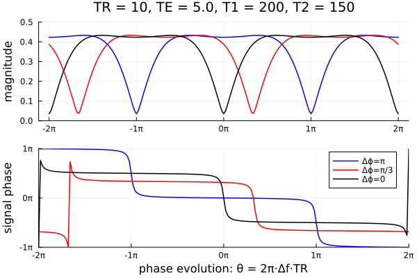
prompt()The blue phase curve above is nearly flat near 0, suggesting spin-echo like behavior, as described in Ref. 1.
Zoom to examine the phase slope near 0:
function fig_zoom(fig)
fig = deepcopy(fig)
xaxis = ("spin phase evolution [rad]", (-1,1) .* (π/2), _xtick(Val(π/2)))
yaxis = ("signal phase [rad]", (-1,1) .* 0.04, (-1:1) * 0.04)
fig = plot(fig, title = "Zoom"; xaxis, yaxis)
return fig
end
fig1b = fig_zoom(fig1[2])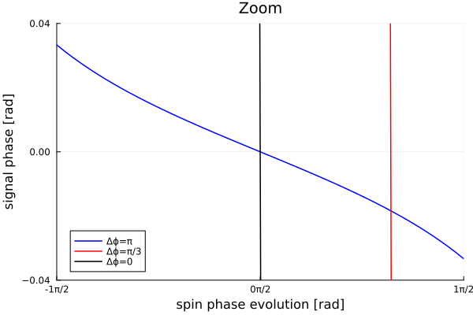
prompt()Phase evolution vs TE
Show spin phase evolution as a function of TE, for Δϕ = π, to further illustrate spin-echo like refocusing at TE ≈ TR/2, reproducing Fig. 2a of Ref. 1.
TE_list = range(0.01, 0.99, 51) * TR_ms
function plot_fig2(T1_ms, T2_ms, title::String; rf=rf0)
Δf_Hz = range(-1, 1, 21) / (TR_ms/1000) / 2.2 # Hz
sig = stack(map(Δf_Hz) do Δf_Hz
map(TE_list) do TE_ms
bssfp(Mz0, T1_ms, T2_ms, Δf_Hz, TR_ms, TE_ms, 1π, rf)
end
end)
fig = plot(TE_list, angle.(sig); title,
xaxis = ("TE [ms]", (0, TR_ms), [0, TR_ms/2, TR_ms]),
yaxis = ("phase [rad]", (-1,1) .* (π/2), _xtick(Val(π/2))),
)
return sig, fig
end
sig2, fig2 = plot_fig2(T1_ms, T2_ms, "Fig 2a. of Ref. 1")
fig2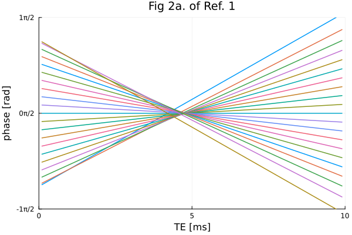
prompt()Short TE case
Myelin water has a fast T2 component. Now repeat the above plots when T2 ≈ TR (instead of T2 ≫ TR).
Here the phase is much less flat near 0 compared to the earlier plot with a slow T2 value.
Mz0, T1_ms, T2_ms, Δf_Hz = 1, 40TR_ms, 1TR_ms, nothing # tissue parameters
sig3, fig3 = plot_fig1(T1_ms, T2_ms)
fig3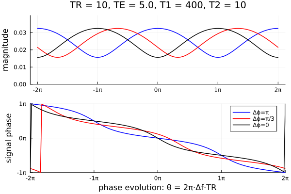
prompt()The apparent (and approximate) echo is much earlier for this smaller T2 value. This T2 dependence of the apparent "echo time" would seem to complicate choosing a TE that minimizes T2* effects.
sig4, fig4 = plot_fig2(T1_ms, T2_ms, "Alternative Fig. 2a for fast T2 = $T2_ms")
fig4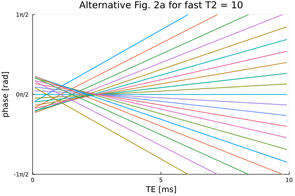
prompt()Finite RF duration
Everything above was for the ideal case of an idealized instantaneous RF pulse.
Revisit for a rectangular RF pulse. The signal magnitude changes a bit, but the signal phase changes fairly little.
rf1 = RectRF(1, α_rad)
sig5, fig5 = plot_fig1(T1_ms, T2_ms, rf1)
fig5[2].attr[:title] = "with RectRF"
fig5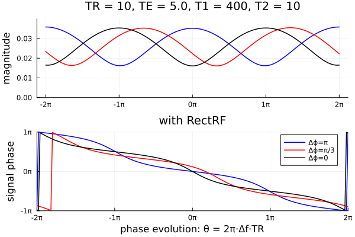
prompt()
tmp1 = Iterators.product(
Δϕ_label,
[" Instant. RF " " 1ms RectRF "],
)
ymax = round(maximum(abs, sig5), RoundUp; sigdigits=1)
fig35m = plot(θ, [abs.(sig3) abs.(sig5)];
xtick = _xtick(Val(2π)), color = [1 2 3 1 2 3],
line = [:solid :solid :solid :dash :dash :dash],
ylim = (0, ymax),
label = hcat(map(t -> *(t...), tmp1)...),
title = "Effect of RF duration on bSSFP magnitude",
)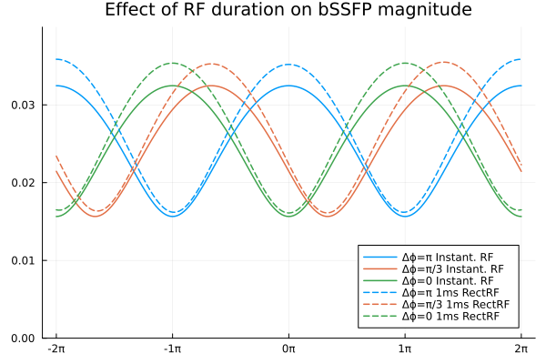
prompt()
fig35p = plot(θ, [angle.(sig3) angle.(sig5)];
xtick = _xtick(Val(2π)), color = [1 2 3 1 2 3],
line = [:solid :solid :solid :dash :dash :dash],
label = hcat(map(t -> *(t...), tmp1)...),
title = "Effect of RF duration on bSSFP phase",
)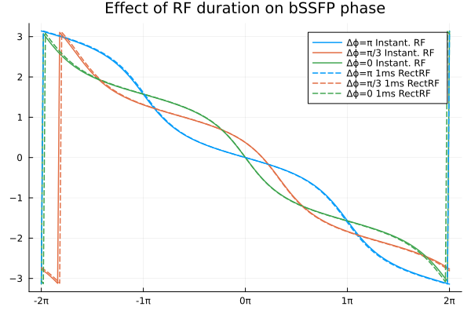
prompt()Largest phase differences near the low signal magnitude regions:
fig35diff = plot(θ, angle.(sig3 .* conj(sig5));
xtick = _xtick(Val(2π)),
label = ["Δϕ=π" "Δϕ=π/3"],
title="phase difference",
)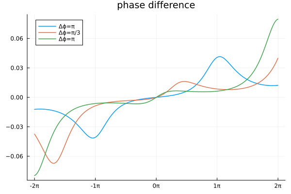
prompt()Phase cycling
Plot bSSFP signal and phase versus phase cycling factor Δϕ, instead of spin phase evolution. Now the phase does not appear constant across the passband.
Here the phase changes about 2 radians over 2π; experimental 7T data has about 3 radians. The source of that discrepancy is unknown.
α_deg = 60
rf60 = InstantaneousRF(deg2rad(α_deg), 0)
function plot_cycle1(
T1_ms, T2_ms, Δf_Hz = 0;
TR_ms = 8, TE_ms = 4, rf = rf60, # Amaya's experiment
)
Δϕ = range(-1, 1, 201) * 2π # [rad]
sig = map(Δϕ) do Δϕ
bssfp(Mz0, T1_ms, T2_ms, Δf_Hz, TR_ms, TE_ms, Δϕ, rf)
end
xtick = _xtick(Val(2π))
ymax = round(maximum(abs, sig), RoundUp; sigdigits=1)
figm = plot(Δϕ, abs.(sig); xtick, color = :magenta,
yaxis = ("magnitude", (0,ymax)),
)
figa = plot(Δϕ, angle.(sig); xtick,
xaxis = ("Δϕ [rad]", (-1,1) .* 2π, ),
yaxis = ("phase [rad]", ),
)
fig = plot(figm, figa; layout = (2,1), plot_title =
("α=$(α_deg)°, TR=$TR_ms, TE=$TE_ms, Δf=$Δf_Hz, T1=$T1_ms, T2=$T2_ms"),
)
return sig, fig
end
sig6, fig6 = plot_cycle1(274, 54)
fig6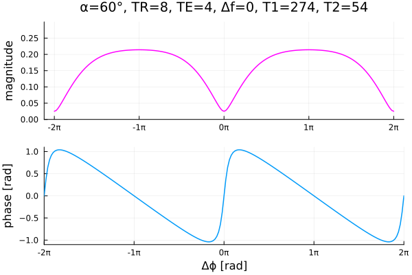
prompt()Multiple flip angles
Plot bSSFP signal and phase versus phase cycling factor Δϕ for a set of flip angles.
Δϕ_rad = range(-1, 1, 401) * 2π
function plot_flips(
T1_ms, T2_ms, Δf_Hz = 0;
TR_ms = 8, TE_ms = 4,
α_str = "[1; 5:5:90]",
α_deg = eval(Meta.parse(α_str)),
)
sig = stack(map(α_deg) do α_deg
map(Δϕ_rad) do Δϕ
rf = InstantaneousRF(deg2rad(α_deg), 0)
bssfp(Mz0, T1_ms, T2_ms, Δf_Hz, TR_ms, TE_ms, Δϕ, rf)
end
end)
xtick = _xtick(Val(2π))
ymax = round(maximum(abs, sig), RoundUp; sigdigits=1)
figm = plot(Δϕ_rad, abs.(sig[:,2:end-1]); xtick, # color = :magenta,
yaxis = ("magnitude", (0,ymax)),
)
plot!(Δϕ_rad, abs.(sig[:,end]); label="$(α_deg[end])°", color = :red)
plot!(Δϕ_rad, abs.(sig[:,1]); label="$(α_deg[1])°", color = :black)
figa = plot(Δϕ_rad, angle.(sig); xtick,
xaxis = ("Δϕ [rad]", (-1,1) .* 2π, ),
yaxis = ("phase [rad]", ),
)
fig = plot(figm, figa; layout = (2,1), plot_title =
("α=$(α_str)°, TR=$TR_ms, TE=$TE_ms, Δf=$Δf_Hz, T1=$T1_ms, T2=$T2_ms"),
)
return sig, fig
end
sig7, fig7 = plot_flips(274, 54)
fig7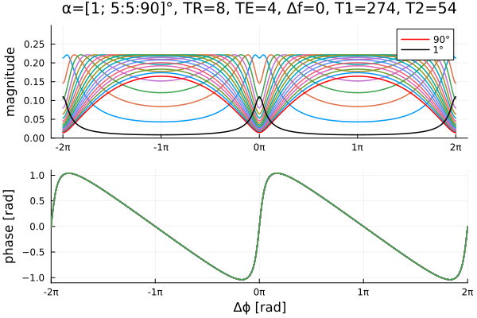
prompt()Flip angle sweep
Plot bSSFP signal magnitude as a function flip angle α for a few values of T2 and phase cycling increment Δϕ.
Δϕ_plot = [0, π/4, π/2, π]
T2_list = [50, 20, 10]
α_str = "[0.01; 1:19; 20:5:90]"
α_deg = eval(Meta.parse(α_str))
tmp = map(Δϕ_plot) do Δϕ
ip = argmin(abs.(Δϕ .- Δϕ_rad))
sig = stack(map(T2_list) do T2
T1 = 400
plot_flips(T1, T2; α_str, α_deg)[1][ip,:]
end)
plot(α_deg, abs.(sig),
xaxis = ("α °", (0, 90), 0:10:90),
ylabel = "magnitude",
# marker = :dot,
label = reshape(map(t -> "T2 = $t ms", T2_list), 1, :), # row!
title = "bSSFP signal: Δϕ=$(Δϕ_rad[ip]/π) π",
)
end
fig8 = plot(tmp...)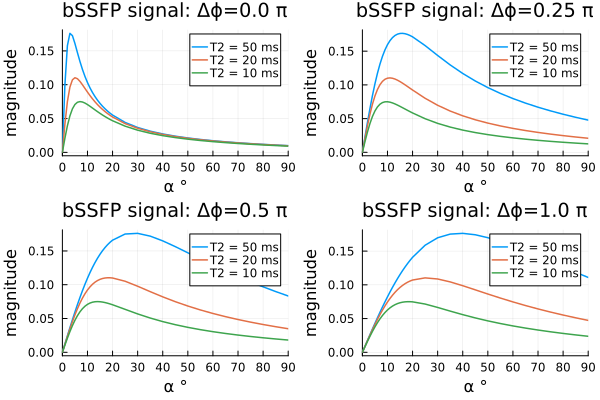
prompt()This page was generated using Literate.jl.